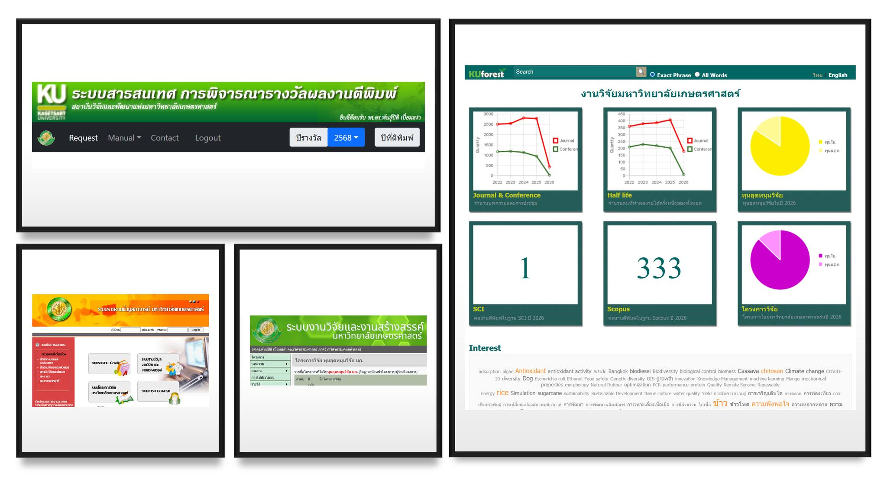

Digital transformation ที่แท้จริงไม่ใช่แค่มีระบบ แต่ต้องเปลี่ยน workflow และ dataflow ขององค์กรให้ได้
{kind=link}

บทความนี้เริ่มจากคำถามง่ายแต่แหลมคมว่า ในเมื่อรัฐมีระบบเก็บภาษีเงินได้และมีข้อมูลจากหน่วยงานที่หักภาษี ณ ที่จ่ายอยู่แล้ว ทำไมประชาชนยังต้องมากรอกแบบภาษีเองอีก คำถามนี้กลายเป็นจุดตั้งต้นของการมอง digital transformation ว่าแท้จริงแล้วปัญหาไม่ได้อยู่ที่เทคโนโลยี เพราะเทคโนโลยีพร้อมมานานมาก แต่สิ่งที่ไม่พร้อมคือองค์กรจะเปลี่ยนจากระบบกระดาษไปสู่ระบบดิจิทัลที่มี workflow และ dataflow ชัดเจนได้หรือไม่
จากประสบการณ์ที่ต่อเนื่องมาสู่การทำระบบข้อมูลงานวิจัยของมหาวิทยาลัย ระบบภาระงาน KU-Work และเว็บไซต์ KU Forest บทความนี้ชี้ให้เห็นปัญหาเดิมซ้ำ ๆ คือข้อมูลชุดเดียวถูกขอซ้ำจากหลายหน่วยงาน หลายฟอร์แมต หลายช่วงเวลา ทั้งที่จริงแล้วโจทย์พื้นฐานคือการทำให้ข้อมูลเดียวถูกใช้ได้หลายงานอย่างเชื่อถือได้
บทความอธิบายว่าระบบเหล่านี้จะเกิดผลได้ก็ต่อเมื่อข้อมูลถูกต้อง ทันสมัย และนำไปใช้ต่อได้จริง แต่ในโลกจริงข้อมูลข้ามหน่วยงานมักแชร์กันไม่ได้ หรือไม่แน่ใจด้วยซ้ำว่าอันไหนถูกต้องกว่าอีกอันหนึ่ง ความท้าทายจึงไม่ใช่แค่เขียนระบบ แต่คือการทำให้ source of truth ชัดเจนและเชื่อมกันได้
ระบบที่ดีต้องลดการกรอกซ้ำ และดึงข้อมูลจากแหล่งที่เชื่อถือได้จริง
บทความยกตัวอย่างเชิงปฏิบัติหลายกรณี เช่น การส่งต่อข้อมูลงานวิจัยจากระบบของ สวพ. ไปยังกองการเจ้าหน้าที่เพื่อให้คณาจารย์กรอกเพียงครั้งเดียว หรือการหยุดขอข้อมูลตีพิมพ์จากนักวิจัยโดยตรงแล้วหันไป ดูดข้อมูลจากแหล่งต้นทาง เช่นฐานข้อมูล Scopus แทน เพราะข้อมูลจาก source มักน่าเชื่อถือและลดภาระคนได้มากกว่า
แนวคิดนี้ยังต่อยอดไปสู่การออกแบบ incentive system อย่างรางวัลผลงานวิจัย ที่ไม่เพียงให้รางวัลการตีพิมพ์ แต่ทำให้คนช่วยตรวจสอบข้อมูลให้ใช้ประโยชน์ต่อได้จริงด้วย
Digital transformation เป็นโจทย์ของวิสัยทัศน์องค์กร ไม่ใช่แค่โจทย์ไอที
บทความจึงสรุปตรงไปตรงมาว่า ในทางเทคนิค งานแบบนี้ไม่ได้ยากที่สุด แต่ในเชิงวิชาการและเชิงองค์กร มันคือปัญหาเรื่องวิสัยทัศน์และกลยุทธ์ของผู้นำองค์กร เพราะการเปลี่ยน workflow และ dataflow จริง ๆ หมายถึงต้องแตะระเบียบ ข้อกฎหมาย และแรงต้านภายในอีกจำนวนมาก
ถ้าไม่มีความเข้าใจและการกำกับจาก เบอร์หนึ่งขององค์กร งานพวกนี้ก็มักไปได้แค่ระดับบางหน่วย ไม่สามารถ transform ทั้งระบบได้จริง นี่จึงเป็นอีกบทความที่ย้ำว่าความสำเร็จของระบบดิจิทัลขึ้นกับการออกแบบองค์กรพอ ๆ กับการออกแบบซอฟต์แวร์